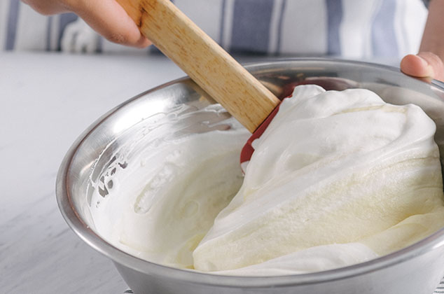
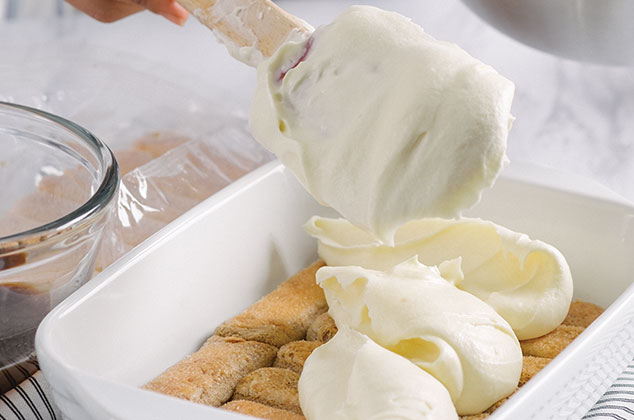

Aprende cómo preparar una auténtica receta italiana de un postre a base de café, galletas y queso mascarpone.
Mezclar el café con el licor de café y Reservar.
En un bol, batir la yemas de huevo con el azúcar y una cucharada de vainilla. Poner la mezcla a cocer a baño maria hasta los 85ºc o hasta obtener una espuma similar a la de un sabayón
Apartar del fuego y seguir batiendo hasta que se enfríe. Luego incorporar el queso mascarpone a la espuma de yemas y refrigerar.
Batir la crema hasta formar picos duros (punto medio).
Agregar una tercera parte de la crema batida a la preparación del queso y unir con espatula de goma
Integrar de forma envolvente hasta terminar de mezclar las dos preparaciones.
Embeber las vainillas con el café aromatizado con licor de café y cubrir el molde elegido
Añadir una capa de crema mascarpone sobre las vainillas
Formar otra capa de vainillas hidratadas en café sobre la crema
Agregar otra capa de crema de mascarpone con ayuda de una manga
Finalmente espolvorear la cocoa. Refrigerar durante una noche. Servir y decorar con el chocolate rallado y la menta.